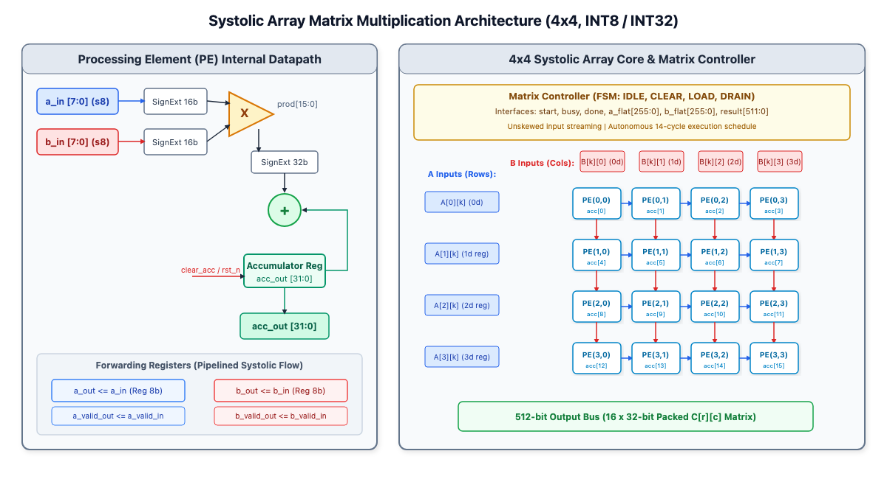
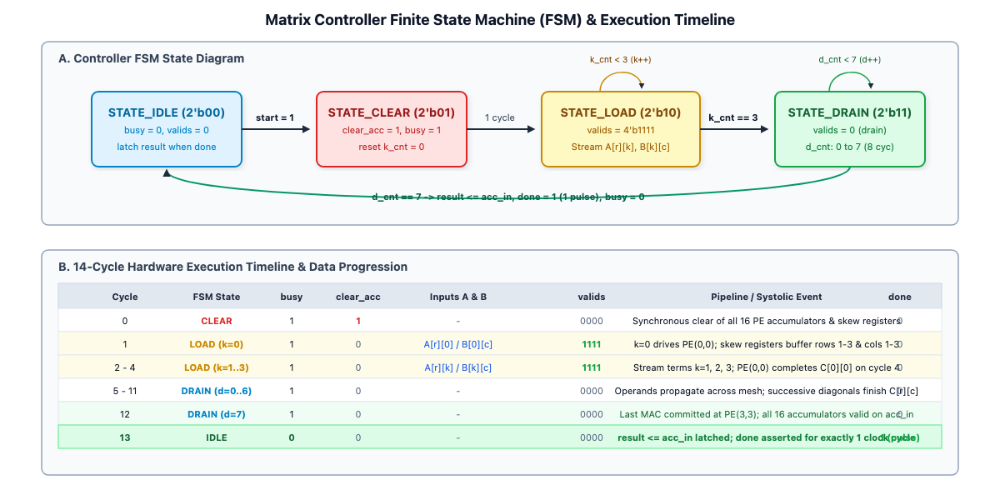
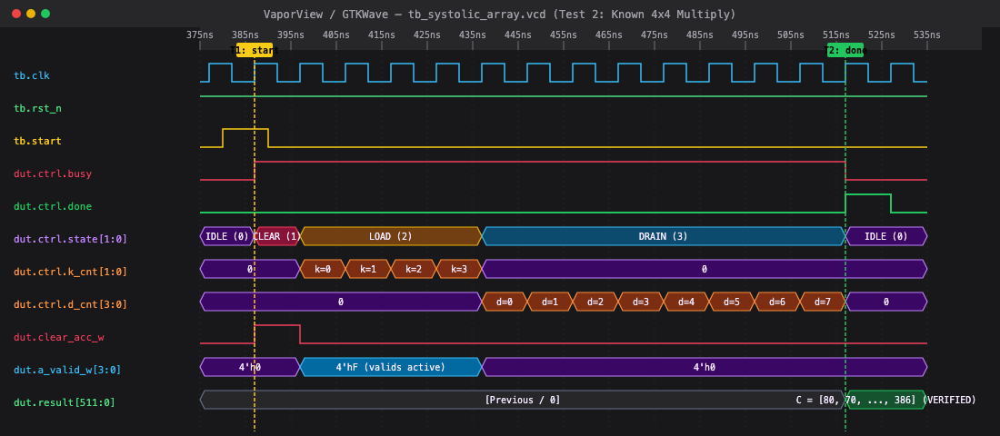
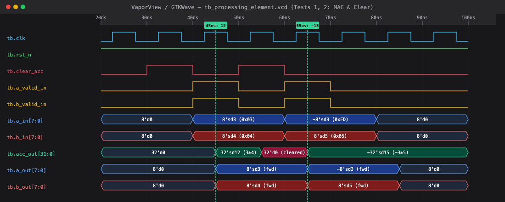

Abstract—This project implements a hardware-efficient, highly parallel 4×4 systolic array matrix multiplication accelerator in Verilog HDL as Phase 1 of an energy-efficient General Matrix Multiply (GEMM) processing engine. The accelerator features signed 8-bit integer operands (INT8) and 32-bit accumulators (INT32) to prevent arithmetic overflow during accumulation. A 2D mesh grid of 16 Processing Elements (PEs) executes pipelined Multiply-Accumulate (MAC) operations with concurrent horizontal and vertical operand forwarding. The core incorporates an internal register skewing pipeline that eliminates external timing alignment buffers, accepting unskewed matrix streams directly. A four-state Mealy/Moore finite state machine (FSM) controller orchestrates an autonomous 14-clock-cycle execution schedule (1 clear cycle, 4 load cycles, 8 drain cycles, and 1 done pulse cycle) with deterministic handshaking. The hardware is verified across four abstraction levels: unit PE tests (10/10 passed), cycle-by-cycle array core tests (105 matrices across 1,533 clock edges verified against a software model), integrated system tests (9/9 passed, including extreme signed values, back-to-back operations, and mid-compute reset recovery), and an algorithmic Python golden model (40 randomized/corner-case vectors passed). Waveform evidence confirms single-cycle pulse outputs, exact 14-cycle latency, and full functional correctness.
Matrix multiplication represents the computational kernel of modern artificial intelligence, deep neural networks (DNNs), computer vision, and scientific computing [1]. Standard matrix-matrix multiplication (C = A × B) of two N × N matrices requires O(N3) multiply-accumulate operations over O(N2) data elements. In conventional Von Neumann architectures, fetching operands from off-chip memory for each arithmetic operation introduces the memory bandwidth bottleneck (the “memory wall”), resulting in substantial energy dissipation and low computational throughput [2].
To overcome these constraints, H. T. Kung and C. E. Leiserson proposed the systolic array architecture in 1978 [3]. A systolic array is a network of tightly coupled, homogeneous Processing Elements (PEs) that compute and pass data rhythmically through the system. Instead of re-reading operands from memory, data elements broadcast or stream through the array, allowing an operand to be reused multiple times across adjacent PEs before being discarded. Consequently, systolic arrays achieve high operational intensity, performing O(N3) arithmetic operations while requiring only O(N) memory bandwidth at the array perimeter [4].
Modern domain-specific accelerators, such as Google's Tensor Processing Unit (TPU) [1], NVIDIA's Tensor Cores, and various edge-AI neural processing units (NPUs), rely extensively on 2D systolic arrays. Systolic architectures are broadly categorized into three dataflow paradigms: (1) Weight-Stationary (WS), where weights remain stationary while activations and sums flow; (2) Input-Stationary (IS), where input activations remain stationary; and (3) Output-Stationary (OS), where partial sums accumulate locally within each PE's internal register while input matrices A and B stream horizontally and vertically through the array [5].
Phase 1 of this project implements an Output-Stationary 4×4 systolic array architecture. By holding partial sums locally in each PE until the complete dot-product completes, internal register switching activity and external interconnect routing are substantially minimized. Furthermore, by implementing signed 8-bit operands with 32-bit accumulators, our design reflects contemporary low-power edge-AI quantization standards [6].
The accelerator design is structured hierarchically into four hardware and verification tiers (Fig. 1): (1) Processing Element (PE) containing arithmetic units, accumulator, and forwarding registers; (2) Systolic Array Core providing a 4×4 2D mesh of 16 PEs with integrated input skewing pipelines; (3) Matrix Controller coordinating data feeding, state transitions, and memory handshaking; and (4) Top-Level Integration wrapping the controller and array.

Each Processing Element (rtl/processing_element.v) computes the scalar accumulation:
The PE receives signed 8-bit inputs a_in and b_in, along with active-high valid handshake flags a_valid_in and b_valid_in. The inputs are sign-extended to 16 bits. A 16-bit signed multiplier produces a 16-bit signed product. This product is then sign-extended to 32 bits and summed with the current value of the 32-bit accumulator register acc_out.
Accumulation occurs strictly on the rising clock edge when both a_valid_in and b_valid_in are asserted. If either valid flag is low, accumulation is inhibited, holding the partial sum constant. When the synchronous clear signal clear_acc is asserted, acc_out resets to 32'sd0 on the rising clock edge, overriding any incoming operands.
Concurrently, the PE buffers operands into internal pipeline registers:
rst_n clears all internal registers, valid signals, and accumulators.
The 4×4 systolic array core (rtl/systolic_array.v) instantiates 16 homogeneous PEs in a regular 2D grid using Verilog generate constructs.
Traditional systolic arrays require external hardware or software to skew input matrices into diagonal wavefronts (i.e., staggering row r by r cycles and column c by c cycles). In our proposed architecture, the skewing circuitry is embedded directly inside the array perimeter: Row 0 / Col 0 have 0 delay stages; Row 1 / Col 1 have 1 synchronous delay flip-flop stage; Row 2 / Col 2 have 2 stages; and Row 3 / Col 3 have 3 stages. Both data bytes and valid bits pass through these skew registers. Consequently, term k of row r and column c reaches PE(r, c) at exact clock cycle:
The Matrix Controller (rtl/matrix_controller.v) implements a 4-state Mealy/Moore FSM (Fig. 2):
busy=0 and done=0. Upon detecting a single-cycle pulse on start, it asserts busy=1, asserts clear_acc=1, and transitions to STATE_CLEAR.clear_acc, resets load counter k_cnt=0, and transitions to STATE_LOAD.a_valid=4'b1111 and b_valid=4'b1111, slicing and driving row lanes A[r][k] and column lanes B[k][c] from the packed 256-bit input buses. When k_cnt==3, it resets d_cnt=0 and transitions to STATE_DRAIN.4'b0000). Over eight clock cycles (d=0 to 7), operands propagate across the array. When d_cnt==7, PE(3,3) completes its final MAC, all 16 results are valid on acc_in, and the FSM latches result <= acc_in, asserts a single-cycle pulse on done, deasserts busy, and returns to STATE_IDLE.Total latency from start detection to registered result availability is exactly 14 clock cycles. Table I summarizes the cycle schedule.
| Cycle | State | busy | clear_acc | valids | k/d cnt | Hardware Event |
|---|---|---|---|---|---|---|
| 0 | CLEAR | 1 | 1 | 4'b0000 | - | Synchronous clear of all 16 PEs |
| 1 | LOAD | 1 | 0 | 4'b1111 | k=0 | Feed k=0; PE(0,0) starts |
| 2–4 | LOAD | 1 | 0 | 4'b1111 | k=1..3 | Feed k=1..3; C[0][0] finishes cyc 4 |
| 5–11 | DRAIN | 1 | 0 | 4'b0000 | d=0..6 | Successive diagonals complete |
| 12 | DRAIN | 1 | 0 | 4'b0000 | d=7 | PE(3,3) commits; acc_in valid |
| 13 | IDLE | 0 | 0 | 4'b0000 | - | Latch result; done=1 (1 pulse) |

start to done.Verification was conducted using Icarus Verilog 13.0 and GTKWave across four tiered simulation suites:
1) Unit-Level PE Verification (tb_processing_element.v): Ten targeted directed tests verify signed positive multiplication (3 × 4 = 12), negative multiplication (−3 × 5 = −15), double negative arithmetic (−3 × −4 = 12), zero multiplication, multi-cycle accumulation (12 − 15 + 32 = 29), operand invalidation suppression, accumulator clearing priority, and registered forwarding. All 10 tests passed (Fig. 4).
2) Core-Level Cycle-Accurate Verification (tb_systolic_array_core.v): Evaluates the raw 2D array grid across 105 distinct matrix multiplications (including identity, zero, signed extremes, and 100 pseudo-random matrices). An internal cycle-by-cycle scoreboard model checks all 16 accumulator outputs on every clock edge (1,533 edges verified with zero errors). It also verifies bubbles, independent valid masks, and asynchronous reset recovery.
3) Integrated System-Level Verification (tb_systolic_array.v): Exercises the full systolic_array_top module across 9 complex operational scenarios: Identity × M (I × M = M), Zero × Zero, known positive 4×4 matrix multiply, extreme signed values (−128 / +127), mixed signs, back-to-back operations without idle delay, reset during active computation, and result hold stability. All 9 test suites passed with 0 mismatches (Table II). Waveform capture of Test 2 is presented in Fig. 3.
4) Algorithmic Python Golden Model (golden_model.py): An independent Python reference model generates 40 test vectors (20 corner cases + 20 randomized), exports $readmemh-compatible hex test files, and provides automated hex unpacking and verification of the 512-bit output bus. All 40 vectors passed with zero errors.
| Test Scenario | Matrix Properties | Latency | Status |
|---|---|---|---|
| Identity × M | A = I4, Br,c = 4r+c+1 | 14 cycles | PASS |
| Zero × Zero | A = 04×4, B = 04×4 | 14 cycles | PASS |
| Known Positive | A: 1..16, B: 16..1 | 14 cycles | PASS |
| Signed Extremes | Checkerboard −128 / +127 | 14 cycles | PASS |
| Mixed Signs | Alternate positive / negative | 14 cycles | PASS |
| Back-to-Back | Continuous chained GEMM | 28 cycles | PASS |
| Reset Mid-Run | Assert reset during LOAD | Recovered | PASS |
| Result Stability | Hold across 50 idle cycles | Stable | PASS |

tb_systolic_array.vcd (Test 2: Known 4×4 Multiplication). Markers show start assertion at T1 = 380 ns, deterministic progression through CLEAR, LOAD (k=0..3), and DRAIN (d=0..7), and single-cycle done pulse asserting at T2 = 515 ns with verified output latching.
pe.vcd, demonstrating positive multiplication (3 × 4 = 12 at 45 ns), accumulator clearing to zero at 55 ns, and negative multiplication (−3 × 5 = −15 at 65 ns).The development, verification, and documentation tasks were partitioned among the five team members as follows:
rtl/processing_element.v). Implemented signed sign-extension logic, 16-bit signed multiplier, 32-bit accumulator, and dual registered forwarding channels. Authored the unit-level PE testbench (testbench/tb_processing_element.v) and verified all 10 unit test cases.rtl/systolic_array.v). Designed the integrated row and column skewing delay register pipelines. Authored the cycle-accurate array core testbench (testbench/tb_systolic_array_core.v) and verified 105 matrix multiplications across 1,533 clock edges.rtl/matrix_controller.v) and top-level accelerator integration (rtl/systolic_array_top.v). Formulated the 14-cycle execution schedule. Authored the system-level integration testbench (testbench/tb_systolic_array.v) verifying all 9 system test cases.verification/golden_model.py). Implemented the automated 40-vector randomized test suite, $readmemh hex file export, and 512-bit hex bus output unpacking and automated comparison routines.Phase 1 successfully implemented, simulated, and verified a 4×4 systolic array matrix multiplication accelerator in Verilog HDL. The design features INT8 operands, INT32 accumulators, embedded input skewing, and an autonomous 14-cycle FSM controller. The implementation achieves 100% pass rates across unit, core, system, and algorithmic verification suites.
Phase 2 will extend this architecture by: (1) integrating dual-port Block RAMs (BRAMs) for local activation and weight storage; (2) implementing an industry-standard AXI4-Stream memory interface with burst transfers; (3) adding a matrix tiling engine to partition arbitrary M × K × N matrices into 4×4 hardware blocks; and (4) deploying and synthesizing the complete accelerator on an AMD Xilinx Artix-7/Zynq FPGA board to evaluate maximum operating frequency, resource utilization, and power dissipation.